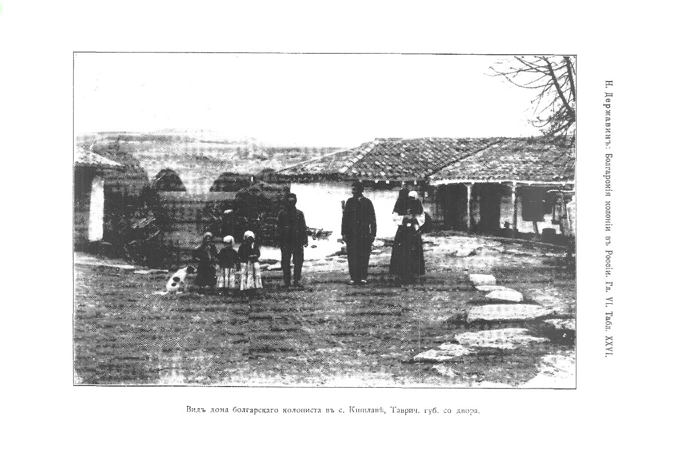

Родилась: 13.12.1928
Умерла: 01.05.2002
Род: Маврешко
Продолжительность жизни: 73
Место жительства: Донецкая обл. Добропольский р-н пос. Водянский
Основное занятие: домохозяйка, повар в столовой
Родилась в Крыму в семье болгар. В июне 1944 года была депортирована по нац. признаку (болгары) в Пермскую область, где работала в шахте. После рождения детей занималась их воспитанием. После перезда в Донецкую область работала в поселковой столовой сначала кухонной рабочей, потом поваром.
Отец: Маврешко Иван Маркович
Мать: Маврешко (Сербинова) Мария Васильева
Сестра: Маврешко Зинаида Ивановна
Брат: Маврешко Василий Иванович
Муж: Булинг Герберт Иванович
Сын: Булинг Анатолий Владимирович
Сын: Булинг Василий Гербертович
Дочь: Пьяных (Булинг) Лидия Гербертовна
mnib536-Derjavin-BolgarskieKoloniiVRossii_274. |